Префектура Хоккайдо · Бибай · искусство
Arte Piazza Bibai: парк скульптур Кана Ясуды на месте шахтёрского посёлка
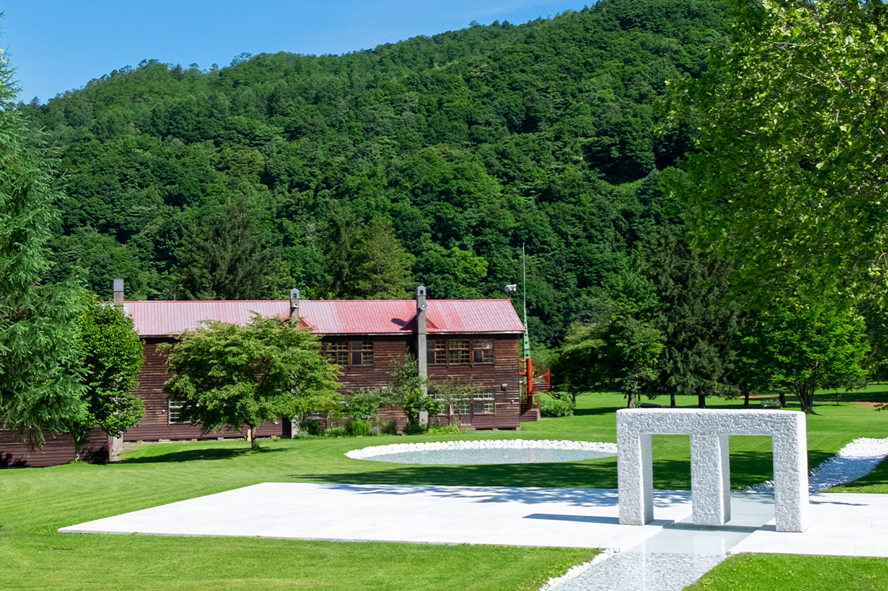
В горной долине Бибая, бывшего угольного города в центре Хоккайдо, скульптор Кан Ясуда превратил закрытую школу и её окрестности в парк искусства. Около сорока его работ из мрамора и бронзы стоят среди холмов и деревьев, и вход сюда свободный.
Память
Город, где жили шахтёры
Бибай когда-то был одним из крупнейших угольных городов Японии. В лучшие годы здесь жили около 100 000 человек, в основном шахтёры и их семьи. Про такие посёлки говорили «одна гора, одна семья»: все, кто жил у одной шахты, считались родными. Работа под землёй была опасной, каждый день мужчины рисковали жизнью, зато на праздники гулял весь посёлок.
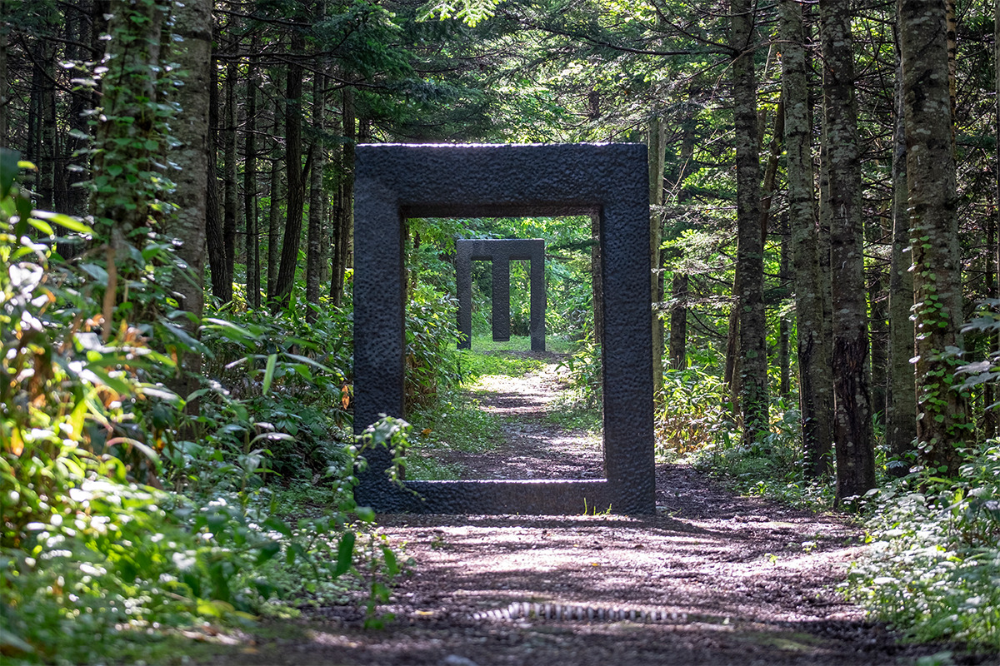
Потом шахты закрылись, и многие уехали искать работу в другие края. Но люди, выросшие в шахтёрском посёлке, до сих пор возвращаются сюда издалека со своими воспоминаниями. Деревянная школа и спортзал внутри Arte Piazza Bibai когда-то были школой для детей шахтёров. Они стали для бывших жителей родным местом, где память о городе передают следующему поколению.
Парк
Площадь для всех
Arte Piazza Bibai открылась в 1992 году. Название по-итальянски значит «площадь искусства», и задумана она как место, где каждый может провести время свободно и без цели, как ему захочется. Музей создали вместе город Бибай и уроженец этих мест скульптор Кан Ясуда. Весь участок вокруг закрытой деревянной школы, вместе с ландшафтом, спроектировал он сам, и парк продолжает меняться.
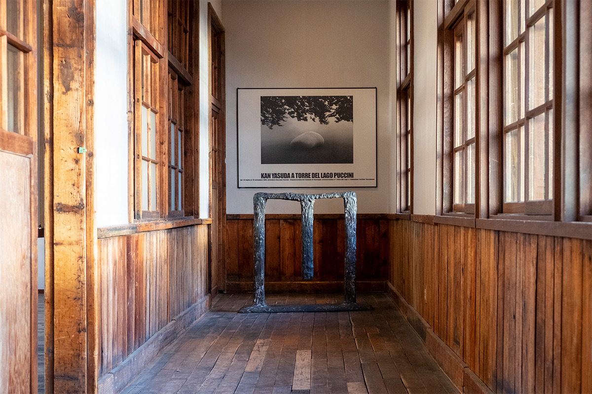
Скульптуры стоят прямо среди холмов и деревьев и словно становятся их частью. Такое пространство отражает того, кто на него смотрит, и помогает побыть наедине с собой. По замыслу создателей, оно должно оставаться неизменным, чтобы любой человек мог вернуться сюда, как в свой родной дом.
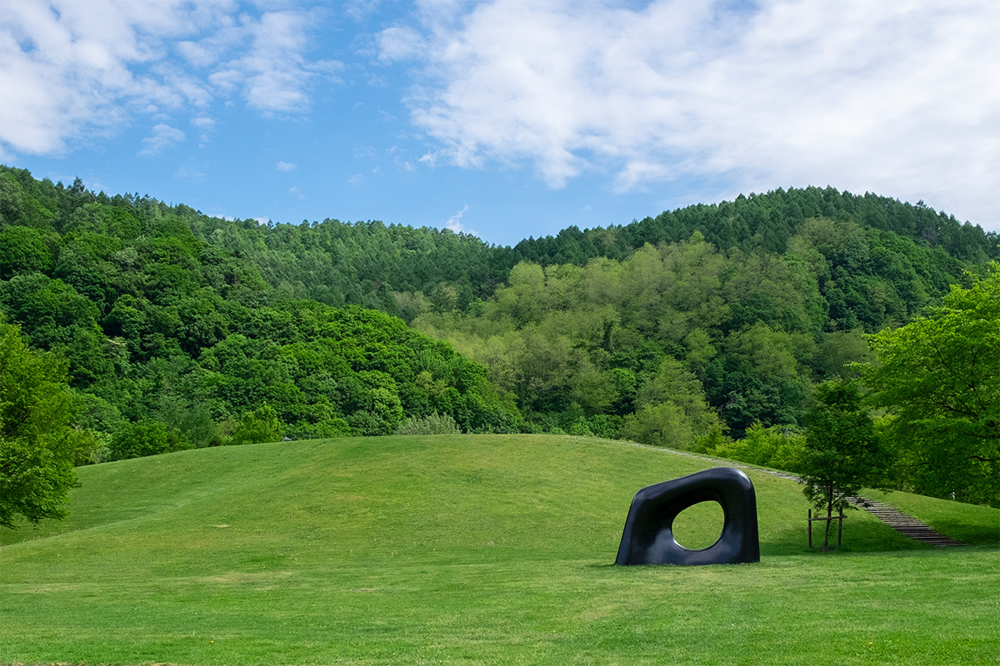
Залы
Деревянная школа и старый спортзал
Работы показаны в трёх частях парка. Крупные скульптуры, на которые приходится смотреть снизу вверх, стоят под открытым небом и в бывшем спортзале. Небольшие работы собраны в галерее в здании старой школы.
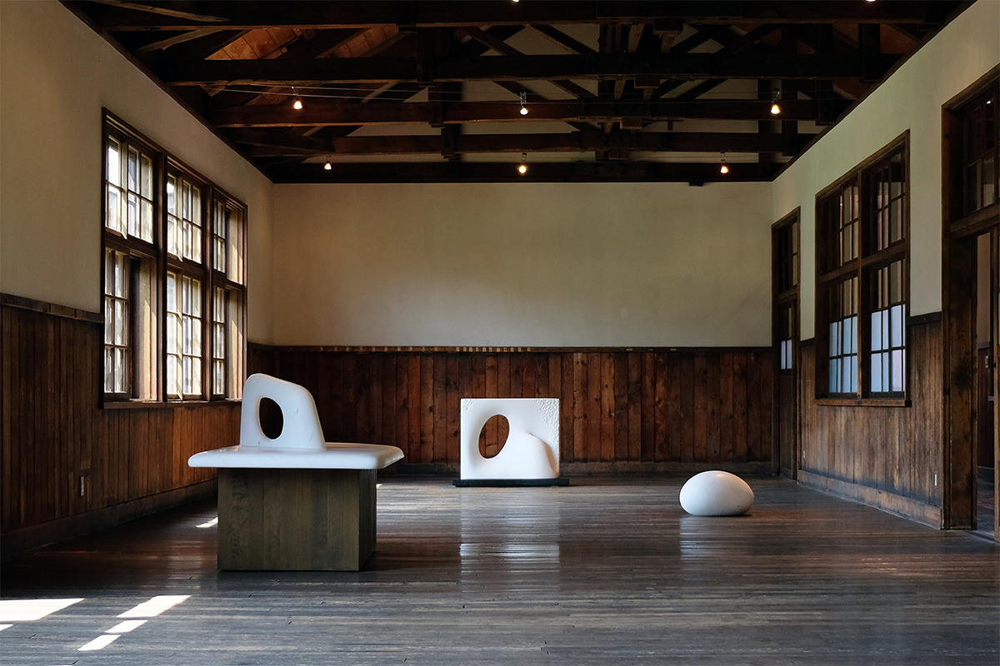
Галерея занимает второй этаж деревянного здания, где до марта 1981 года работала начальная школа шахтёрского посёлка. Здание сохранило облик старой школы, а белый мрамор и бронза Ясуды делают его одновременно знакомым и новым. Сюда с удовольствием приходят и пожилые, и молодые.
Арт-пространство устроено в бывшем школьном спортзале, который тоже закрылся в 1981 году. Потолок с фермами остался прежним, и само здание интересно как архитектура. Здесь проходят концерты и лекции. С 10 июня 2026 года до 31 марта 2027 года арт-пространство закрыто на ремонт.
Площади
Вода, звуки и клевер
«Площадь воды» составляют белые мраморные скульптуры «Тэнсэй» и «Тэн», каменная сцена и пруд. Протоку и пруд выложили мраморной галькой из реки у подножия каменоломен Каррары в Италии.
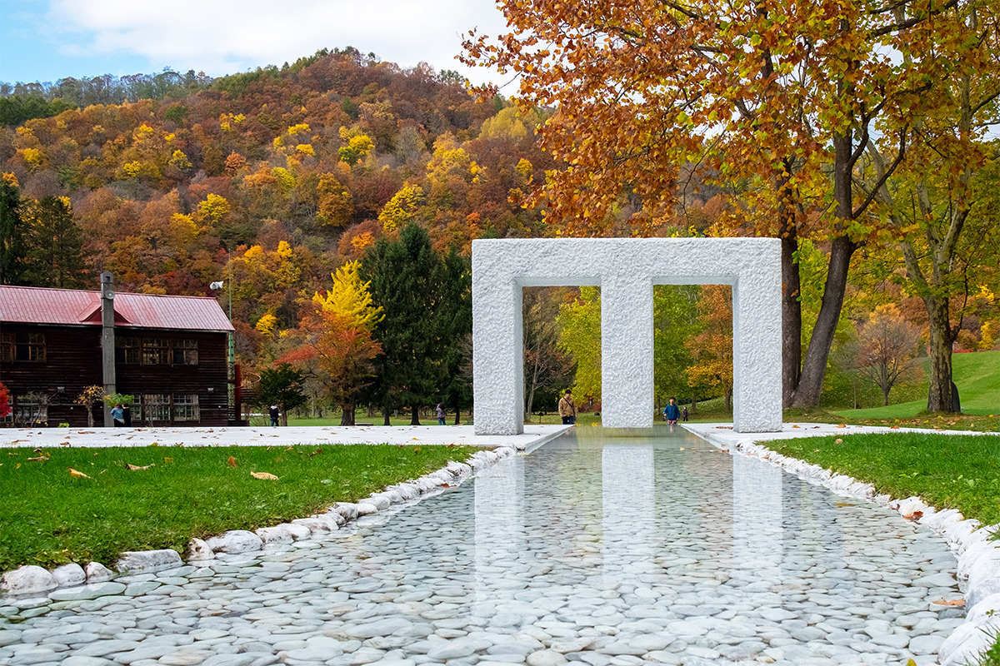
На «Площади звуков» слышны голоса птиц, ветер и журчание реки, а видна она целиком из окон кафе. «Площадь Трифольо» (по-итальянски «клевер») покрыта клевером. На ней лежит мраморная «Тэн», будто встречая детей. По данным 2022 года, каждый год 13 августа на этой площади ставят помост и устраивают праздник танцев бон-одори.
По лестнице из шпал можно подняться на «Холм Тэнсё». В углублении на вершине стоит белая мраморная «Тэнсё». Если присесть у её подножия, над головой открывается широкое небо, а внизу виден весь парк.
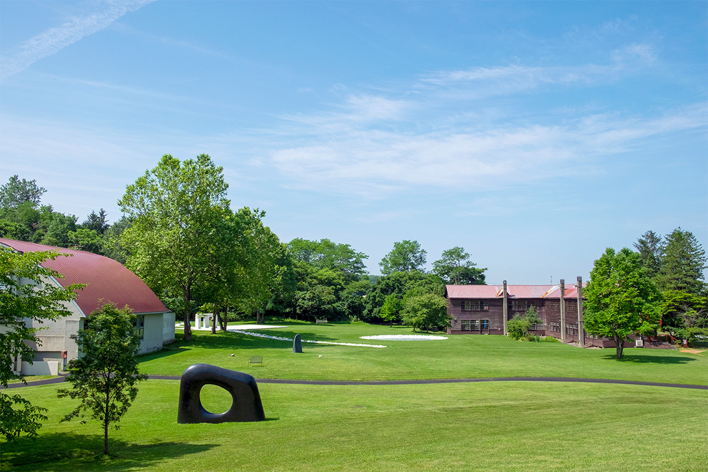
Отдых
Caffè Arte и мастерская
Caffè Arte открыли по просьбе посетителей, которым хотелось спокойно выпить чаю. Высокие потолки, большие окна и много места: здесь удобно отдохнуть после прогулки. Летом работает терраса.
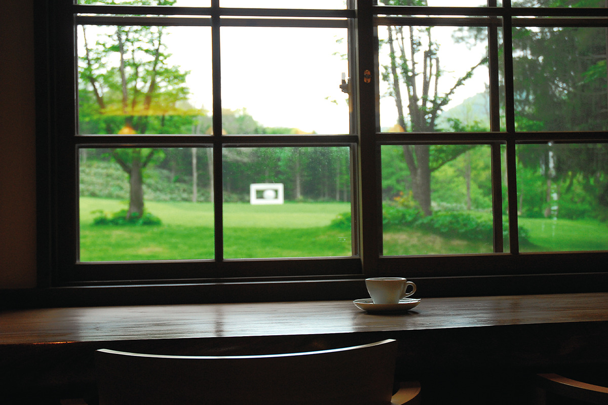
«Студио Арте» построили как мастерскую для тех, кто хочет попробовать себя в скульптуре. Здесь есть итальянские напильники, стамески и молотки и такие же верстаки, как у каменотёсов. Мастерскую можно снять для своей работы или для встреч. В 2022 году в первые субботу и воскресенье каждого месяца здесь проходил «Урок, на котором вырезают сердце».
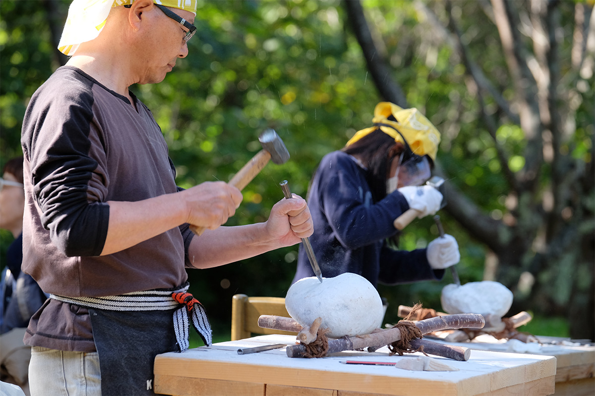
Юбилей
Выставка к 30-летию в 2022 году
Летом 2022 года, к 30-летию музея, здесь прошла выставка Кана Ясуды «Touching the Time», она продлилась до 26 сентября. Под открытым небом показали три крупные работы, а в галерее одиннадцать бронзовых скульптур, созданных с 1980-х годов по 2022 год, включая новые. Специально для выставки привезли и работы знаменитого мастера крашения тканей.
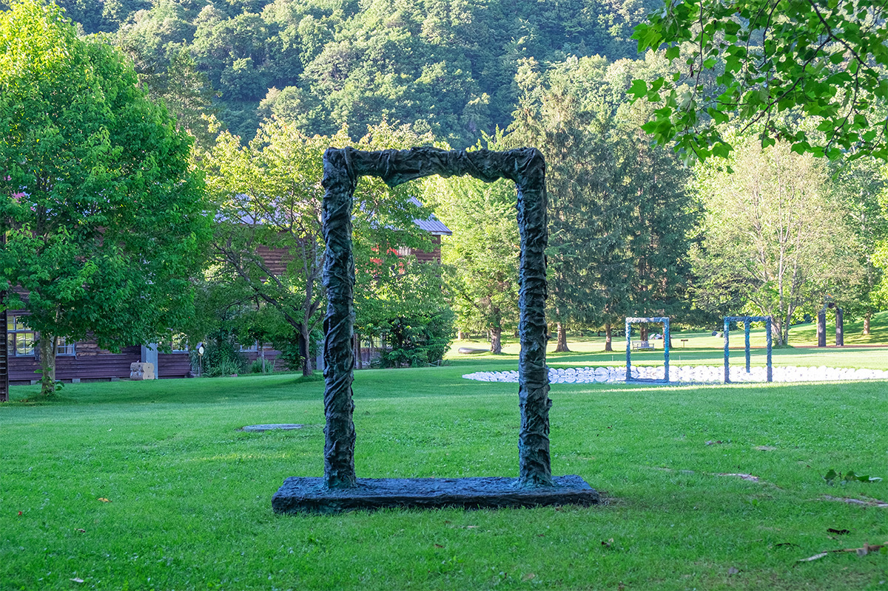
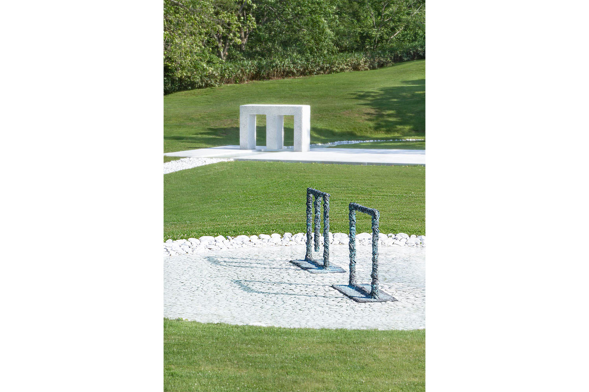
Музей стоит в горах Бибая, среди чистых ручьёв и лесистых склонов, которые снова заросли на месте бывших шахтёрских кварталов. Здесь хорошо видно, как меняются времена года. Двухэтажная деревянная школа построена так, как строили школы несколько десятилетий назад, и навевает ностальгию не только на местных. Мраморная сцена у подножия холма и бывший спортзал служат площадками для концертов, танца и лекций, а в галерее проходят разные выставки.
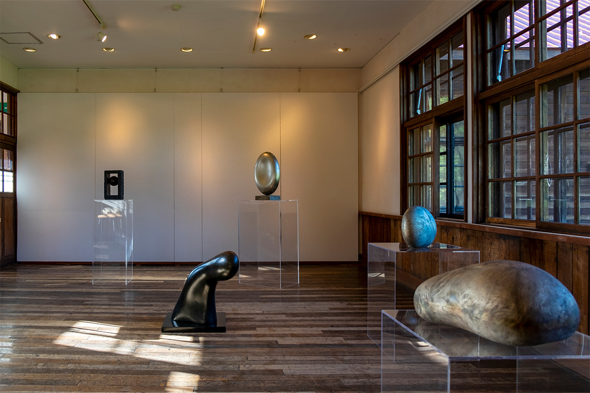
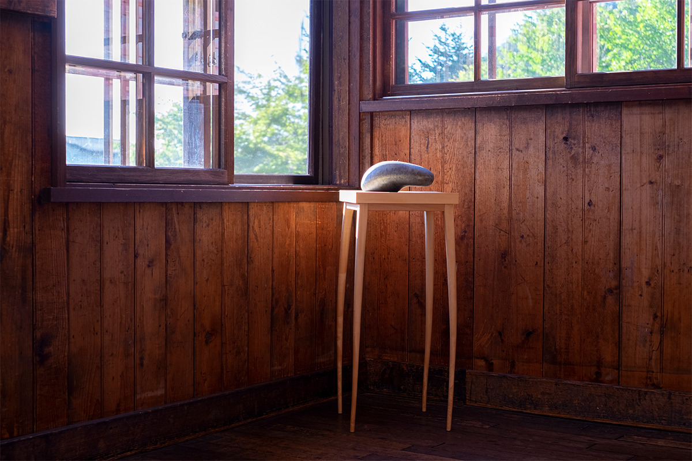
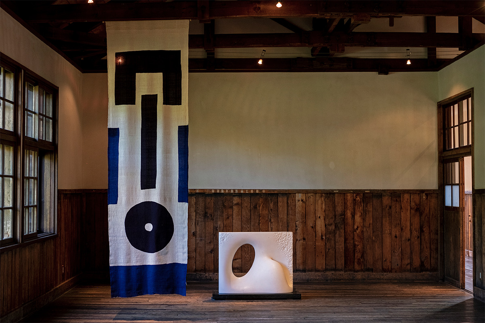
Kan Yasuda Sculpture Museum Arte Piazza Bibai
- Адрес
- префектура Хоккайдо, Бибай, Отиаи-тё, Сакаэ-мати
- Телефон
- +81 126-63-3137
- Часы работы
- 9:00–17:00
- Выходные
- вторник, день после праздника (кроме воскресенья)
- Цены / Вход
- бесплатно (можно оставить пожертвование)
- Сайт
- artepiazza.jp